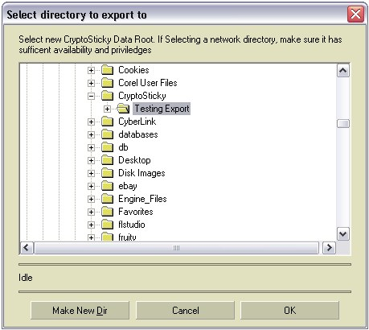
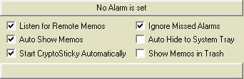

|
CryptoSticky Backup
and Restore
CryptoSticky can
preserve your stickies, doodles and recordings with an effective and
easy to use backup / export facility. To start backup / export, go to
the Configure panel, by pressing the 'Configure' button on the
CryptoSticky' main screen. Then, press the button 'Export Stickies'. A
directory selection dialog will show, where one can select a target
directory to export to.
From
the
target
directory selection dialog, one can navigate to the
desired target directory or create a new directory to export to. Once
the selection is done, pressing OK will export all CryptoSticky
memos
to that directory. The export facility will copy all memos, all voice
recordings and all doodle files to the target.
Importing memos. The reverse happens when clicking on the
'Import Stickies' button. This time however, a standard file dialog
shows, and
CryptoSticky will allow you to select the import memos on a per memo
basis. If you want to select all memos, select the contents of the
whole dialog. (This can be easily accomplished by pressing CTRL-A)
After
selection, pressing the 'Open' button will import all selected memos.
It is safe to import a memo multiple times, as
CryptoSticky has a built in sticky conflict resolution. The stickies
that already exist on the target are compared, and enumerated as
follows: If the
memo exists on the target machine, is is compared to the pre-existing
version. If they are identical, the new memo is silently discarded. It
they are different, CryptoSticky will create an new memo with a number
suffix. "Memo for Steve" becomes "Memo for Steve#1". The the suffix
exists, it is incremented, so "Memo for Steve#1" becomes "Memo for
Steve#2".
|
 |
After import, the
user can decide which memo to keep,
alternatively, the user can edit / merge all the changes into a new
memo or even save the changes back to the original. With this merging
facility, CryptoSticky becomes a safe and easy memo keeping for
even the busiest of us.
|  |
In
addition to the import
/ export facility, CryptoSticky saves the
deleted stickies into the
'Deleted' folder. By default, the 'Deleted' folder is not visible. One
can view it by checking the 'Show Memos In trash' check box on the main
panel. The deleted sticky can still be used, and it is accessible under
the same name as its original, with the exception that it is located in
the
'Deleted'
folder. To restore a memo, one may use
the 'Copy Memo'
and the Paste facility and re-create the memo under any heading. |
Copyright © by
RobotMonkeySoftware
|